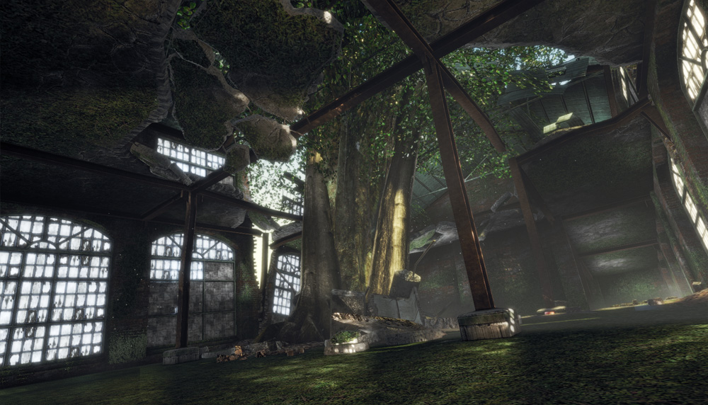
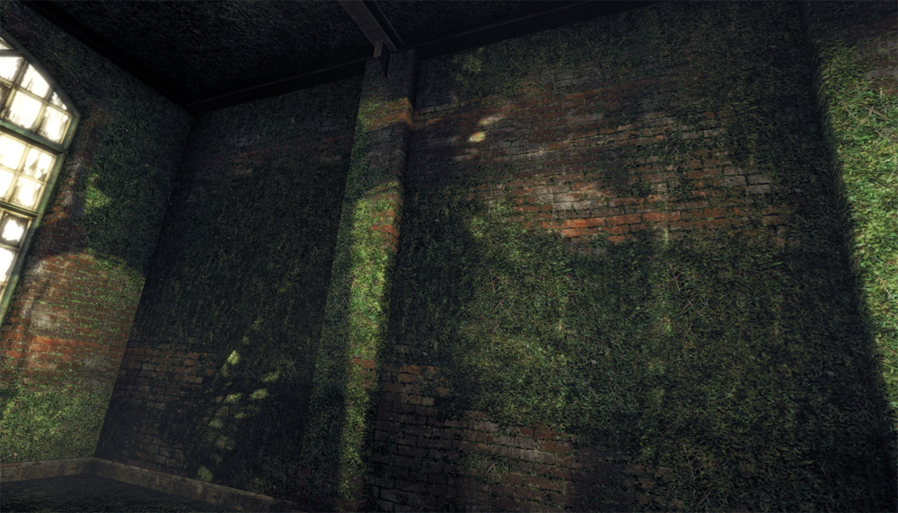
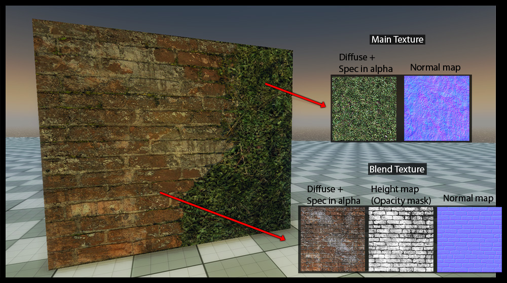
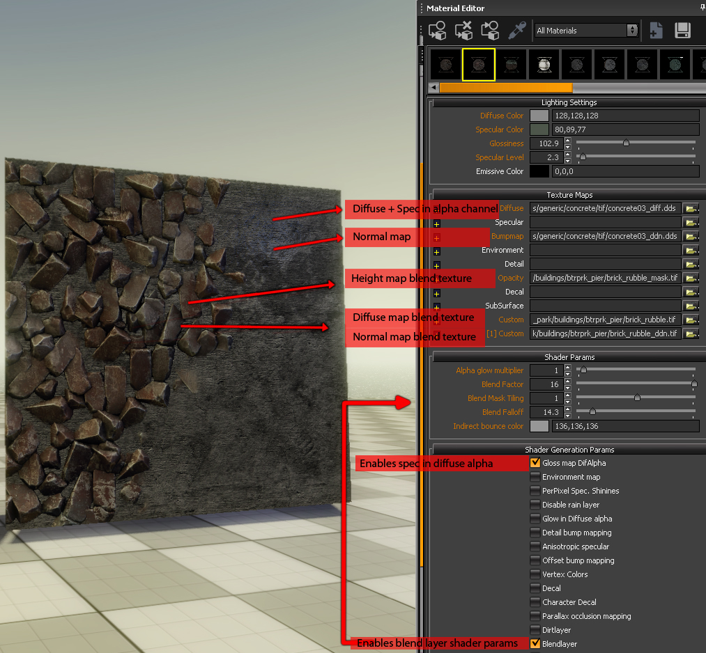

Overview
The blend layer feature allows mixing a second set of textures with the base set to get more variation on tiled surfaces.
The blending is primarily based on the vertex alpha channel and a generic blend map. The vertex alpha determines where the blend layer should be visible on the surface of the mesh.
Independent from the geometry tessellation, you can achieve smooth as well as very sharp transitions between the layers. A low number of vertices is sufficient for good looking results.
A very useful feature of the blend layer is that a heightmap can be used as blend map. This makes the blending follow the structure of the base texture.
Example of the blend layer in an indoor environment 
Example of the blend layer on a brick wall with green moss 
In game asset with Illum shader and blend layer feature enabled 
The blend layer feature does not combine two generic materials, it rather blends specific textures of a single material. This means that the basic material settings apply to both layers.
The blend layer can have an individual diffuse map, a specular mask (in the alpha channel of the diffuse map) and a separate normal map.
Usually, this gives enough control to get great results with good performance. Shader values (spec intensity, glossiness) are applied to both layers (the base and the blend layer).
Sandbox Material Setup
The blending can be enabled with the Blendlayer checkbox. Once active, several new shader parameters will show up:
Shader Param | Description |
|---|---|
Blend Factor | Changes the overall blend factor. Use this to fade in and out the blend layer. |
Blend Falloff | Specifies how smooth the transition between the layers should be. Use a high value for a sharp transition. |
Blend Layer 2 Tiling | Change tiling of second blend layer. |
Blend Mask Tiling | DEPRECATED - Specifies how often the blend layer textures are repeated (tiled). |
Blend Mask Rotation | DEPRECATED - Change rotation of blend mask. |
Once Blendlayer is enabled, the available texture slots will update:
Texture Map | Description |
|---|---|
Second Diffuse Map | Diffuse map of blend layer (with the specular mask in alpha). |
Second Bump Map | Normal map of blend layer. |
Second Height Map | Displacement map of the blend layer. |
Blending Map | The blend map (a generic grayscale texture, e.g. a noise texture, or a heightmap). |
The blend map can be interpreted as if it would specify some height. This way you can have moss growing between the bricks.
If the blend factor is increased, by changing the vertex alpha, blend map or strength slider, the moss will slowly begin to cover the surface of the bricks.
Example of Blend Layer setup in the Sandbox Material Editor 
The falloff can be useful to simulate different material types. With a high falloff value, you can get a hard blend to simulate for example rust on a metal surface. A low value gives a much smoother transition, as you would have it for snow on the ground.
The blend factor should normally be set to 16. If you want to tweak the blending, you should do it in 3ds Max via the Vertex Alpha. If you lower the blend factor you will lose range and control. A blend factor below 16 never allows you to reach the maximum blending.